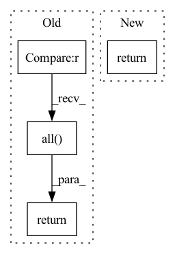

Pattern ID :41417
Before Change
def in_manifold(X, r, eps=1e-4):
norm = X.norm(dim=-1)
rs = torch.full_like(norm, r)
return (torch.norm(norm - rs, p=float("inf")) < eps).all()
def extra_repr(self):
return _extra_repr(n=self.n, r=self.r, tensorial_size=self.tensorial_size)
After Change
return torch.zeros_like(x)
def in_manifold(self, x, eps=1e-4):
return _in_sphere(x, self.radius, eps)
def sample(self):
rIn pattern: SUPERPATTERN
Frequency: 5
Non-data size: 4
Instances Fragment ID: 116523440
Project Name: lezcano/geotorch
Commit Name: dc26861e87c0b631e595561d0151a4eb4fed9424
Time: 2020-12-30
Author: lezcano-93@hotmail.com
File Name: geotorch/sphere.py
M Class Name: Sphere
N Class Name: Sphere
M Method Name: in_manifold(3)
N Method Name: in_manifold(3)
M Parent Class: nn.Module
N Parent Class: nn.Module
M File Name: geotorch/sphere.py
N File Name: geotorch/sphere.py
M Start Line: 126
M End Line: 128
N Start Line: 143
N End Line: 143
Before Change
Checks if buffers are of type UninitializedBuffer and returns
True only if none of them are.
return torch.Tensor([type(buffer) != torch.nn.parameter.UninitializedBuffer
for buffer in self.buffers()]).all()
def init_states_with_shape(self, shape, randomize: bool = False) -> None:
Initialise states/buffers with either zeros or randomAfter Change
for buff in self.buffers():
if isinstance(buff, torch.nn.parameter.UninitializedBuffer):
return False
return True
def init_states_with_shape(self, shape, randomize: bool = False) -> None:
Fragment ID: 116523435
Project Name: synsense/sinabs
Commit Name: bcc93fd68a63b13eaaf5c7d0c83231cce6d27d65
Time: 2021-11-30
Author: gregor.lenz@synsense.ai
File Name: sinabs/layers/stateful_layer.py
M Class Name: StatefulLayer
N Class Name: StatefulLayer
M Method Name: are_states_initialised(1)
N Method Name: are_states_initialised(1)
M Parent Class: torch.nn.Module
N Parent Class: torch.nn.Module
M File Name: sinabs/layers/stateful_layer.py
N File Name: sinabs/layers/stateful_layer.py
M Start Line: 61
M End Line: 62
N Start Line: 61
N End Line: 64
Before Change
return False
D = 0.5 * (X + X.transpose(-2, -1))
error = normalized_matrix_one_norm(D)
return (error < eps).all() .item()
After Change
@staticmethod
def in_manifold(X):
return (
X.dim() >= 2
and X.size(-2) == X.size(-1)
and torch.allclose(X, -X.transpose(-2, -1)) Fragment ID: 116523438
Project Name: lezcano/geotorch
Commit Name: 55c19c8acf171807d4c30fc59dee1619ed0e0539
Time: 2021-02-19
Author: lezcano-93@hotmail.com
File Name: geotorch/skew.py
M Class Name: Skew
N Class Name: Skew
M Method Name: in_manifold(1)
N Method Name: in_manifold(2)
M Parent Class: nn.Module
N Parent Class: nn.Module
M File Name: geotorch/skew.py
N File Name: geotorch/skew.py
M Start Line: 36
M End Line: 41
N Start Line: 36
N End Line: 41
Before Change
where True means that the state is $s_0$ of the DAG.
assert self.__class__.state_ndim is not None
out = self.states == self.make_initial_states_tensor(self.batch_shape)
for _ in range(self.__class__.state_ndim):
out = out.all(dim=-1)
return out
@property
def is_sink_state(self) -> DonesTensor:After Change
source_states_tensor = self.__class__.s_0.repeat(
*self.batch_shape, *((1,) * len(self.__class__.state_shape))
)
return self.compare(source_states_tensor)
@property
def is_sink_state(self) -> DonesTensor: Fragment ID: 116523439
Project Name: saleml/gfn
Commit Name: 23f988f3d3560b0c724735e727c3c301594cce68
Time: 2022-10-19
Author: salemlahlou9@gmail.com
File Name: gfn/containers/states.py
M Class Name: States
N Class Name: States
M Method Name: is_initial_state(1)
N Method Name: is_initial_state(1)
M Parent Class: ABC
N Parent Class: ABC
M File Name: gfn/containers/states.py
N File Name: gfn/containers/states.py
M Start Line: 228
M End Line: 232
N Start Line: 249
N End Line: 252
Before Change
sink_states = self.__class__.s_f.repeat(
*self.batch_shape, *((1,) * self.__class__.state_ndim)
)
out = self.states == sink_states
for _ in range(self.__class__.state_ndim):
out = out.all(dim=-1)
return out
def make_masks(self) -> ForwardMasksTensor:
assert self.__class__.n_actions is not NoneAfter Change
sink_states = self.__class__.s_f.repeat(
*self.batch_shape, *((1,) * len(self.__class__.state_shape))
)
return self.compare(sink_states)
def save(self, path: str) -> None:
torch.save( Fragment ID: 116523437
Project Name: saleml/gfn
Commit Name: 23f988f3d3560b0c724735e727c3c301594cce68
Time: 2022-10-19
Author: salemlahlou9@gmail.com
File Name: gfn/containers/states.py
M Class Name: States
N Class Name: States
M Method Name: is_sink_state(1)
N Method Name: is_sink_state(1)
M Parent Class: ABC
N Parent Class: ABC
M File Name: gfn/containers/states.py
N File Name: gfn/containers/states.py
M Start Line: 239
M End Line: 247
N Start Line: 259
N End Line: 262